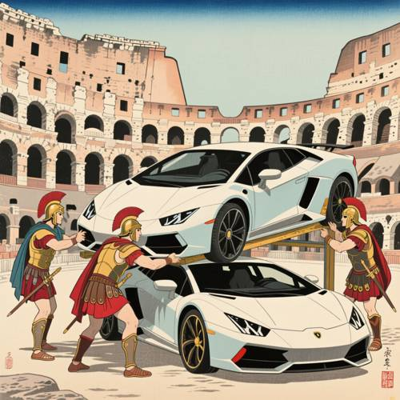
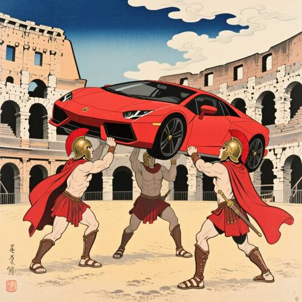
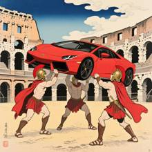

Action — Please generate a picture: In the ancient Roman Colosseum, three Spart
Please generate a picture: In the ancient Roman Colosseum, three Spartan warriors are working together to lift a modern sports car. The picture is in the Ukiyo-e style.

Direct — one call, no iteration

Continuum — Kimi K3 + Qwen-Image
Judge — Direct
FAILAction - Contact Interaction — The image depicts three warriors interacting with two modern sports cars. One white car is positioned on a yellow lift structure above another white car. Two warriors on the left appear to be pushing the bottom car, while a third warrior on the right seems to be adjusting the lift supporting the top car. They are not shown working together to physically lift a single sports car off the ground.
PASSAttribute - Quantity — The image shows exactly three figures dressed as warriors.
FAILWorld Knowledge — The background features a large, tiered amphitheater with arched openings, which is consistent with the appearance of the ancient Roman Colosseum. The figures are depicted as warriors wearing armor, helmets with red plumes, and capes; however, their attire is more characteristic of Roman soldiers than Spartan warriors.
PASSStyle — The image is rendered in a style that emulates Japanese Ukiyo-e woodblock prints, characterized by strong black outlines, a relatively flat application of color, and compositional elements typical of the style. There are also red seals in the corners, mimicking artist signatures found on such prints.
Judge — Continuum
PASSAction - Contact Interaction — The image depicts three muscular men dressed as warriors, all with their arms raised and hands placed on the underside of a red sports car, collectively holding it aloft.
PASSAttribute - Quantity — The image clearly shows three individual figures dressed as warriors.
PASSWorld Knowledge — The background features a large, tiered stone amphitheater with numerous arches, which is visually consistent with the Roman Colosseum. The figures are depicted as warriors wearing helmets, red capes, and greaves, consistent with a popular representation of Spartan or ancient warriors.
PASSStyle — The image is executed in a distinct Ukiyo-e style, evident from the strong, flat outlines, solid blocks of color, stylized clouds in the sky, and the presence of a red seal and vertical script in the bottom-left corner, mimicking a traditional artist's signature.
What the agent did
Thinking
The user wants an image: In the ancient Roman Colosseum, three Spartan warriors working together to lift a modern sports car, in Ukiyo-e style. I need to use qwen-image for generation. Let me craft a detailed prompt with visual details. Key elements: 1. Ancient Roman Colosseum (interior, stone arches, arena) 2. Three Spartan warriors (bronze helmets with red crests, red capes, muscular, spears maybe set aside, leather sandals) 3. Lifting a modern sports car (working together, car lifted off ground) 4. Ukiyo-e style (Japanese woodblock print style — flat color areas, bold outlines, like Hokusai/Hiroshige, textured paper, muted traditional palette) Let me write the prompt for generation. No seed. Use qwen-image model.
Model
I'll generate this anachronistic scene in Ukiyo-e style using qwen-image.
Step 1 — `generate_image`
{
"prompt": "Ukiyo-e style Japanese woodblock print illustration, in the manner of Hokusai: inside the ancient Roman Colosseum with its tiered stone arches and sandy arena floor, three muscular Spartan warriors wearing bronze Corinthian helmets with red crests, crimson capes and leather sandals are working together to lift a sleek modern red sports car above the ground, two at the front and one at the rear, straining with effort. Flat areas of color, bold black outlines, visible wood grain texture, aged washi paper background, muted palette of indigo blue, ochre, vermilion red and cream, stylized clouds in the sky above the Colosseum ruins, dramatic diagonal composition.",
"model": "qwen-image"
}
Result img_0

Thinking
Let me inspect the image. The result looks quite good: 1. Roman Colosseum ✓ — stone arches, tiered structure visible in background 2. Three Spartan warriors ✓ — bronze helmets with red crests, red capes, sandals, muscular 3. Lifting a modern sports car ✓ — red sports car lifted off the ground, three warriors working together 4. Ukiyo-e style ✓ — flat colors, bold outlines, stylized clouds, indigo sky gradient, Japanese signature/seal in lower left Details to check: - The warriors: left one holds the front, middle one lifts from below, right one at the rear. All three are lifting. - The car is modern-looking (Lamborghini-like), clearly a sports car. - The middle warrior's helmet seems to be under the car — his head/helmet appears partially hidden behind the car's underside. Let me look closer. Actually the middle warrior appears to be pushing up from under the car's middle. His helmet crest isn't visible but that's plausible. - The composition is good. The style is consistent. Possible minor issues: - Middle warrior's head seems a bit obscured/odd. Let me inspect the region. - The car wheels — front wheel visible, rear wheel visible. Fine. Let me zoom into the middle warrior's head area to check for artifacts.
The middle warrior's head is actually fine — he's wearing a gold helmet (the crest is hidden under the car, which is plausible since his head is under the car). His anatomy looks clean, no artifacts. His hands are gripping the car's underside. The crop looks good. Let me also quickly check the hands of the left warrior where they meet the car's front, and the car's front wheel, since hands are often problematic. Actually, looking at the full image again: the left warrior's hands appear to be on the front of the car, and they look reasonable. The overall image is coherent. Minor observations: - The middle warrior's helmet crest is hidden — acceptable since his head is beneath the car. - The left warrior's helmet crest is red and visible. The right warrior's crest is visible too. - The Ukiyo-e signature and seal in the lower-left add authenticity to the style. Everything the prompt asks for is present and correct: 1. Ancient Roman Colosseum ✓ 2. Three Spartan warriors ✓ 3. Working together to lift a modern sports car ✓ 4. Ukiyo-e style ✓ This is a good result. I should mark it as best and stop. Good enough is a stop condition.
Step 3 — `mark_best`
{
"image": "img_0",
"reason": "All requested elements present and correct: Roman Colosseum setting, three Spartan warriors with crested helmets and red capes cooperatively lifting a modern red sports car, rendered in authentic Ukiyo-e woodblock style with flat colors, bold outlines, stylized clouds, and artist signature/seal. No visible artifacts."
}
Thinking
The image is marked as best and it's the final result. I'm done. Let me summarize for the user.
Model
Done! The image is complete and marked as the final result. **What's in the picture:** - **Setting:** The ancient Roman Colosseum, with its tiered stone arches and sandy arena floor under a stylized indigo sky - **Three Spartan warriors:** Bronze Corinthian helmets with red crests, flowing crimson capes, leather greaves and sandals — two at the front and side, one at the rear, straining together to hoist the car off the ground - **Modern sports car:** A sleek red Lamborghini-style coupe, lifted clearly above the arena floor - **Ukiyo-e style:** Flat color blocks, bold black outlines, woodblock-print texture, Hokusai-style clouds, a muted indigo/ochre/vermilion palette, and a traditional Japanese signature with a red seal stamp in the lower-left corner The amusing anachronism of Spartan hoplites doing a strongman lift on a supercar inside the Colosseum comes through clearly, all in a convincing woodblock print aesthetic.